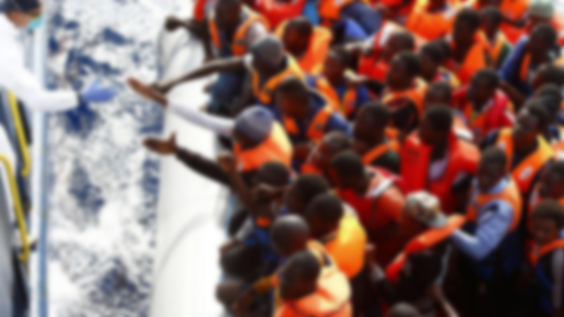

<div class="top">
  <button md-button style="width: 100%;text-align : left;background-color: #ffff8d;" (click)="goBack()" >
    <md-icon>keyboard_backspace</md-icon>
  </button>
  
    Information post migration 
  I- Les causes de la migration
  *le sous emploi
  *Le chômage
  *besoin d’amélioration de compétence
  * la découverte
  II-l assistance prévue 
        *la prise en compte de la signature des accords bilatéraux pour une meilleure protection des droits des citoyens( Sénégal et pays d’accueils)
        * la signature des accords régionaux et sous régionaux par exemple avec CEDEAO, L UEMOA, L OUA , OIM etc.
        *la prise en compte  des législations nationales  c’est a dire les lois relatives a la sécurité sociale , a l’impôt  sur les revenues , la traite des personnes , le droit des enfants ainsi que les autres groupes vulnérables
        * la prise en compte des lois relatives aux droits de l’homme par exemple en collaboration avec  le BIT l’ONU
  III- LA SECURITE EMARGEE
  L’assistance précisée selon la reforme  du 1er janvier 2017 avec l’établissement des 15 députés  représentants des sénégalais  de l’extérieur 
  L’offres des nouvelles cartes  biométriques pour la liberté de la circulation en Afrique de l’Ouest  et faciliter les échanges économiques
  IV – Migration  clandestine
  _Les dangers lies aux voies .Du coté maritime il y a le naufrage des pirogues .
  L`incapacité des navires .
  Du coté terrestres .Les difficultés en passant par le Sahara dans le but de transiter par les pays maghrebiens pour atteindre l’Europe 
  Du coté aérien .Risques d`être arrêter dans les frontières et rapatrier aux pays d’origine
  V/_Le traumatisme des victimes
  Victimes de discriminations et de chômages 
  VI_ Les Rapatries
</div>

